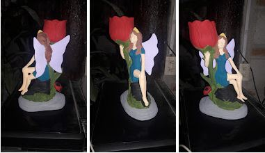

Comida
Es el pescado, los camarones, hamburguesas y tacos.
Tengo 22 años, yo nací el 1 de mayo de 1999, soy de Jiutepec, Morelos, después de una exhaustiva búsqueda del saber que quería estudiar ahora estoy estudiado una Ingeniería en sistemas, comencé a estudiar desde marzo 2021 y aparte estoy estudiando en una academia que se llama Nogara DevCode comencé en diciembre 2021. Con el propósito de trabajar en algo que me apasiona, con actitud de siempre aprender algo nueva, con la habilidad de manejar proyectos, perseverante y comprometida. Soy una persona que se propone metas y logra cumplirlos por la gran satisfacción que se siente al final de lograr su meta.
Decidí estudiar esto porque me gustan mucho las matemáticas y todas las ingenierías llevan matemáticas y en especial en sistemas porque creo firmemente que esta es una de las carreras universitarias que tienen mucho futuro, aparte es tan amplia esta carrera que tiene muchas ramas para escoger la que a ti más te guste.

Es el pescado, los camarones, hamburguesas y tacos.
Me gustan los días nublados y los dias soleados para ir a la playa.
Me gusta viajar y conocer muchos lugares, desde que yo era niña siempre me he mudado mucho de casa, por diferentes razones, entonces sé iniciar desde 0 muchas veces, a lo que me refiero con eso es que no me cuesta entablar conversación o hacer actividades nuevas.
En un futuro no muy lejano quiero viajar más y conocer por lo menos Latinoamérica.
Las figuras más importantes en mi vida son mis padres y mis tíos.
De mi papá aprendí a que hay que ser valiente y que siempre hay que enfrentar las cosas, a no esconderse y que siempre que empieces algo terminarlo.
Mi mamá me ha enseñado la nobleza, el amor y la educación ante todo.
Mi tío Agustín a no rendirme y que a las adversidades hay que ponerles buena cara.
En mis tiempos libres me gusta mucho jugar con mis mascotas,amo a los perros, ver series y películas, escuchar música, jugar videojuegos, platicar y pasar tiempo con mi familia. Me gusta mucho probar cosas distintas, una vez descubrí que me gustaba pintar figuras de cerámica.
Me gusta ver series por muchas razones: una es porque me encanta el entretenimiento visual, porque muchas veces la historia de la película o la serie me entretiene tanto que hasta me siento parte de ella, muchas veces los escritores tienen tanta imaginación que ves historias ficticias que te dejan mensajes o enseñanzas que puedes aplicar día a día.
Me encanta ver series la primera serie entera que vi fue orange is the new black, la cual quede atrapada con las historias de cada una de las personas que estaban ahí, aparte de que su interpretación era increíble, pues actuaban de una manera supernatural.
Me gusta escuchar música de todo tipo y me gusta descubrir música nueva.
Me gustan los videojuegos en donde hay una historia y tienes que cumplir con misiónes, uno de mis videojuegos favoritos es el de Dantes infierno.